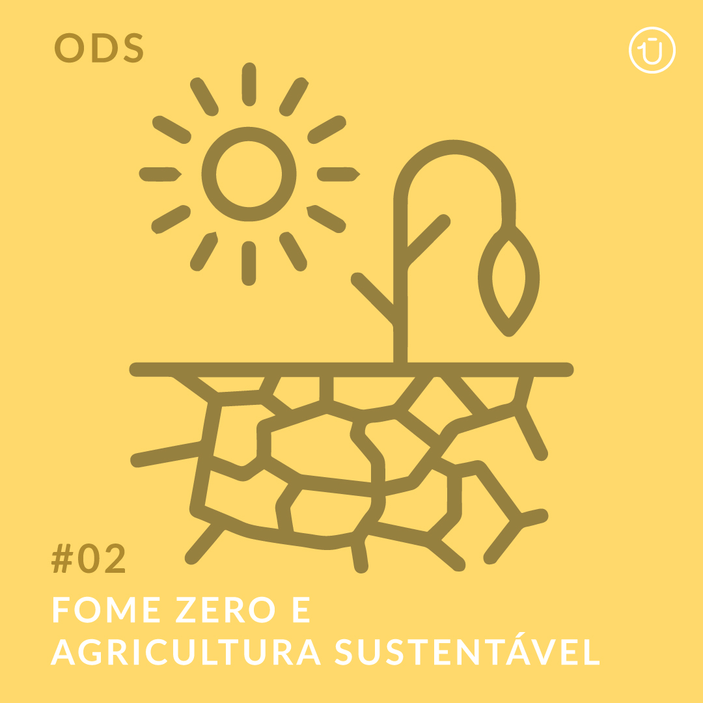

ODS. OBJETIVOS DO DESENVOLVIMENTO SUSTENTÁVEL
FOME ZERO E AGRICULTURA SUSTENTÁVEL
O processo de globalização evidenciou uma grande desigualdade socioeconômica,
que se manifesta de várias formas tanto na área rural, quanto na área urbana, isso acontece porque são desiguais os acessos aos recursos.
Para atenuar as diferenças, a ONU elaborou os Objetivos do Desenvolvimento Sustentável uma agenda composta por 17 objetivos para serem atingidos até 2030.
Nesta agenda estão previstas diversas metas, dentre elas a erradicação da fome e da pobreza, estabelecer a educação universal, segurança alimentar, agricultura, saúde, igualdade de gêneros, entre outras. Os temas estão divididos em quatro dimensões: Social, Ambiental, Institucional e Econômica.
Acabar com a fome, alcançar a segurança alimentar e melhoria da nutrição e promover a agricultura sustentável;

O objetivo 2, diz respeito a:
*acabar com a fome de tal modo que todas as crianças,os pobres e a população como um todo, tenha acesso seguro a alimentos nutritivos todos os dias.
*Outro objetivo é aumentar a produtividade agrícola dos pequenos agricultores.
*Manter a variedade de culturas, com diversidade genética das sementes.